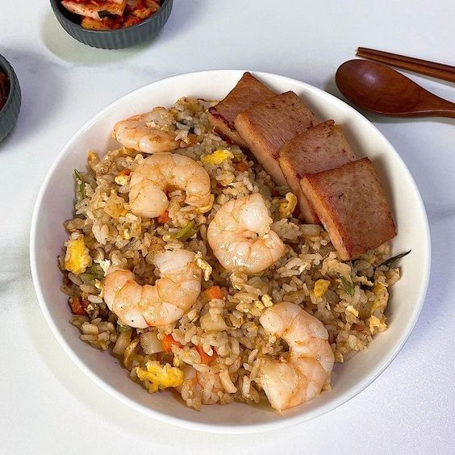
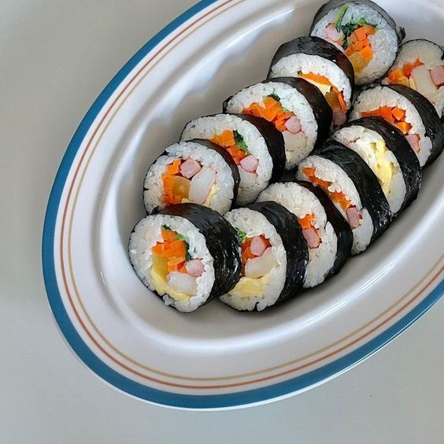
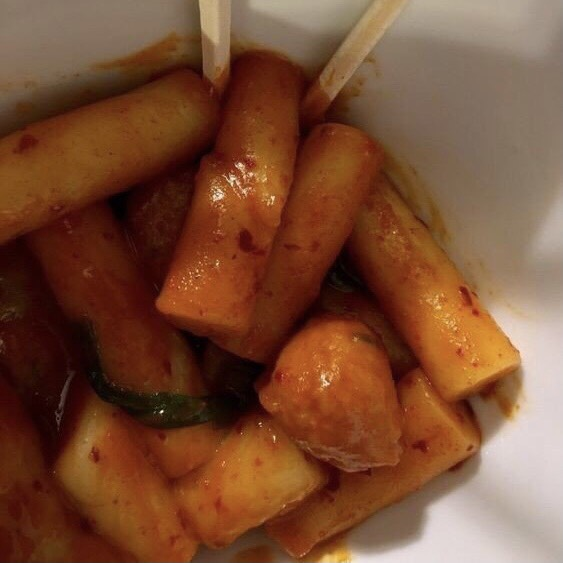

I think one of the most relaxing times is when I cook. I enjoy the moment when I cook and see people enjoying my food. I usually cook Asian dishes, and their tastes are delicious.



I used to be a person who hated cooking because I thought I was not good at it. However, since I live on my own and have to cook for myself, I've found that cooking isn't so obnoxious, but it also helps me relax.